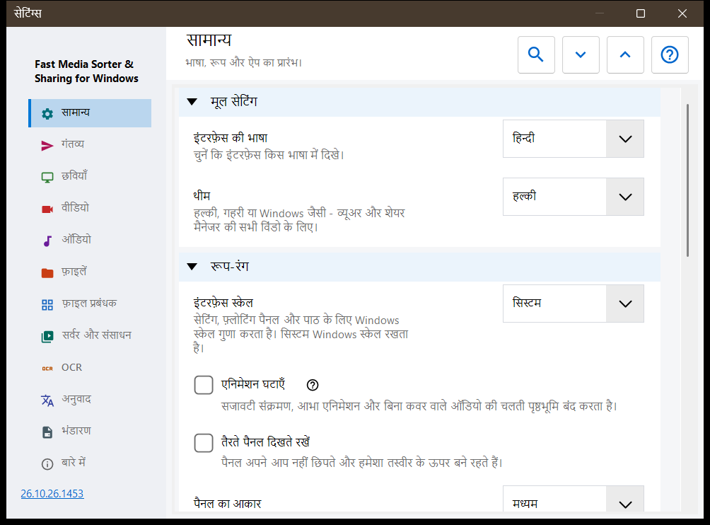
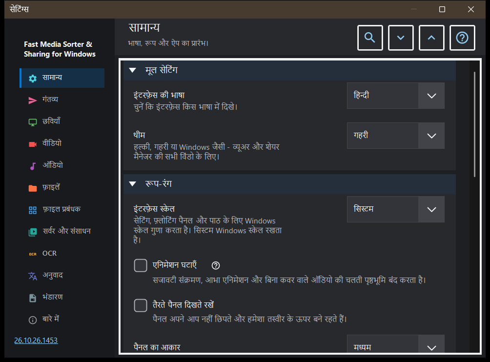

सेटिंग्स
सेटिंग्स
यह किस लिए है
सेटिंग्स विंडो में व्यूअर के सभी विकल्प हैं। यह F2 दबाने से, टूलबार के सेटिंग्स बटन से, या छवि पैनल के फ़ाइल प्रबंधक में सेटिंग्स.. बटन से खुलती है; यह बटन सीधे फ़ाइल प्रबंधक पृष्ठ पर ले जाता है। पृष्ठों की सूची बाईं ओर साइडबार में है, और पृष्ठ के समूहों को समेटा जा सकता है।


इस क्रम में
- साइडबार में कोई पृष्ठ चुनें, या किसी विकल्प को खोजने के लिए सेटिंग खोजें में कोई शब्द लिखें।
- पृष्ठ के सभी समूह खोलने या समेटने के लिए सभी खोलें और सभी समेटें का उपयोग करें।
- जो विकल्प चाहिए उन्हें बदलें।
- विंडो बंद करने के लिए Esc दबाएँ।
तत्व
सामान्य
भाषा और थीम (थीम), फिर तैरते पैनलों का रूप: इंटरफ़ेस स्केल, एनिमेशन घटाना, पिन करना, आकार, अपारदर्शिता, कोने, छवि के ऊपर जानकारी और माउस कर्सर छिपाना; पैनल को उनकी जगह पर लौटाएँ बटन खिसकाए गए सभी पैनलों को उनकी सामान्य जगह पर लौटा देता है। स्टार्टअप समूह तय करता है कि शुरू होने पर क्या हो (शुरू में खोलना, आख़िरी फ़ाइल से जारी रखना, नई विंडो की अनुमति देना), और उसमें स्वागत के चरण फिर से दिखाएँ है, जो प्रारंभिक सेटअप को दोबारा खोलता है। उन्नत सेटिंग समूह अतिरिक्त सेटिंग्स को निर्यात और आयात करता है और डिफ़ॉल्ट मान बहाल करता है।
गंतव्य
वे दस फ़ोल्डर जिनमें कुंजियाँ 1-9 और 0 फ़ाइल को ले जाती हैं; ऊपरी पंक्ति के अंक के साथ Shift उसी फ़ोल्डर में कॉपी करता है। तालिका में हर कुंजी के लिए एक पंक्ति है: कोई पंक्ति चुनें, फिर इस पीसी पर एक फ़ोल्डर.., संसाधन (SFTP या SMB फ़ोल्डर) या साफ़ करें का उपयोग करें, या पंक्ति पर कोई फ़ोल्डर खींचकर छोड़ें। गंतव्य तालिका का रूप समूह छवि के ऊपर दिखने वाली तालिका की स्थिति, चौड़ाई, पाठ का आकार, अपारदर्शिता और दिखने वाली पंक्तियाँ तय करता है, और छवि के ऊपर गंतव्य तालिका उस तालिका को चालू या बंद करता है।
छवियाँ
छवियाँ कैसे खुलती हैं और कैसी दिखती हैं: नई छवि का पैमाना, EXIF टैग से स्वचालित घुमाव, माउस व्हील से ज़ूम, वीडियो प्लेयर के ज़रिए एनिमेटेड ग्राफ़िक्स, और छवि के आकार, फ़ाइल के आकार व तारीख़ की जानकारी। छवि पृष्ठभूमि समूह छवि के आसपास का रंग, परिप्रेक्ष्य पृष्ठभूमि और आभा (गतिशील, एनिमेटेड, गति) तय करता है। स्लाइडशो व्यवहार समूह अंतराल, यादृच्छिक क्रम, मैन्युअल नेविगेशन से शो रुकता है या नहीं, और शो के दौरान इंटरफ़ेस क्या करता है, यह तय करता है। उन्नत हिस्से में गुणवत्ता वाला स्केलिंग और थंबनेल कार्ड का आकार है।
वीडियो
वीडियो फ़ाइलें ब्राउज़िंग में शामिल हों या नहीं, ऑटोप्ले, क्लिप के अंत पर होने वाली क्रिया, स्थिति याद रखना और साझा ध्वनि: ऑडियो और वीडियो। आगे के समूहों में पसंदीदा ऑडियो और उपशीर्षक भाषाएँ और प्लेबैक नियंत्रण हैं: एक क्लिक क्या करता है, नियंत्रणों की देरी, रोकने पर नियंत्रण और सीक के तीन चरण।
ऑडियो
ऑडियो फ़ाइलें ब्राउज़िंग में शामिल हों या नहीं, ट्रैक के अंत पर होने वाली क्रिया, डिफ़ॉल्ट ध्वनि और बिना आवाज़ के शुरू करना। जानकारी और नियंत्रण समूह में हमेशा दिखने वाला ऑडियो बार, बिना आवरण वाली फ़ाइलों के लिए विज़ुअलाइज़र और स्लीप टाइमर है।
फ़ाइलें
फ़ाइलों का संचालन: कॉपी के बाद अगली फ़ाइल पर जाना, नाम टकराने पर और कॉपी या स्थानांतरण के बाद क्या हो, फ़ाइल संचालन में स्थिति पट्टी, अनुपस्थित गंतव्य फ़ोल्डर बनाना, रीसायकल बिन में हटाएँ और हटाने की पुष्टि। फ़ाइल प्रकार समूह में उप-फ़ोल्डर, एक्सटेंशन, दस्तावेज़, पाठ पूर्वावलोकन का आकार और अन्य फ़ाइलें हैं। आगे के समूह हाल की फ़ाइलें और फ़ोल्डर, आर्काइव की सीमाएँ और सुरक्षित .fd-sec फ़ाइलें तय करते हैं। कुंजियाँ और संबद्धताएँ समूह में कीबोर्ड शॉर्टकट बटन है, जो हॉटकी विंडो खोलता है, और छवियों व वीडियो के लिए फ़ाइल संबद्धताएँ हैं।
फ़ाइल प्रबंधक
छवि पैनल के फ़ाइल प्रबंधक के विकल्प: प्रदर्शन मोड (टाइलें या सूची), सामग्री फ़िल्टर, छिपी हुई फ़ाइलें और मीडिया न होने वाली फ़ाइलों के लिए क्रिया। स्थान समूह चुनता है कि कौन-से स्थान दिखें (स्थानीय, संसाधन, डिवाइस), और उसमें छँटाई याद रखें है।
सर्वर और संसाधन
सर्वर और नेटवर्क फ़ोल्डर सूची में वे SFTP और SMB संसाधन हैं जिन्हें व्यूअर ब्राउज़ कर सकता है और गंतव्य के रूप में इस्तेमाल कर सकता है। Android / SFTP समूह इस पीसी के फ़ोल्डरों को SFTP के ज़रिए Android ऐप के लिए प्रकाशित करने के लिए है; उसमें कनेक्शन गाइड और Android क्लाइंट के लिए SFTP सर्वर प्रबंधित करें.. बटन है।
OCR
OCR चालू करें पाठ पहचान चालू करता है, और स्वतः चलाएँ उसे अपने-आप चलने देता है। पाठ पहचान समूह स्रोत भाषा, गुणवत्ता, मोड और भाषा डेटा का डाउनलोड तय करता है।
अनुवाद
सेवा (अनुवाद सेवा) और लक्ष्य भाषा (अनुवाद की भाषा) चुनें; अन्य फ़ील्ड में सेवा का पता, स्थानीय Ollama सर्वर, मॉडल और API कुंजी हैं। छवि पर अनुवाद समूह छवि के ऊपर अनुवाद पैनल की अपारदर्शिता और दृश्यता तय करता है।
भंडारण
कैश की सीमाएँ, हर कैश के लिए साफ़ करें बटन के साथ: डिकोड की गई छवियाँ, छवि पैनल के थंबनेल, आर्काइव और नेटवर्क संसाधन। डिस्क पर OCR कैश में परिणाम डिस्क पर कैश करें, उसकी अपनी सीमा और साफ़ करें बटन है।
बारे में
उत्पाद की जानकारी और लिंक: अपडेट, सेटिंग्स रीसेट करें, संबंधित प्रोजेक्ट, प्रोग्राम सहायता, साइट, GitHub, रिलीज़, गोपनीयता पृष्ठ, MIT लाइसेंस और तृतीय-पक्ष सूचनाएँ। लॉग लेखक को भेजें एक सहमति विंडो दिखाता है, जिसमें लिखा होता है कि आर्काइव में क्या जाएगा, और फिर आर्काइव को आपके मेल प्रोग्राम को सौंप देता है; प्रोग्राम इसके लिए कोई नेटवर्क कनेक्शन नहीं खोलता।
दस्तावेज़
छँटाई फ़िल्टर से अलग PDF रीडर चालू करें। एक पृष्ठ, निरंतर स्क्रॉल या दो पृष्ठ, रंग, ज़ूम, खोज और कैश सीमा चुनें। पृष्ठ बटन पृष्ठ और फ़ाइल बटन फ़ाइल बदलते हैं। पाठ नियंत्रण B/N, अंक और Delete लेते हैं; Esc दृश्य पर लौटाता है। स्वरूप रीसेट करने पर स्थिति और नाम वाले बुकमार्क बने रहते हैं।ज़ोर से पढ़ने के लिए स्थापित Windows आवाज़ें उपयोग होती हैं। पासवर्ड सत्र में रहते हैं। स्थानीय अस्थायी प्रति से मूल फ़ाइल को स्थानांतरित कर सकते हैं। सामान्य निर्यात में पठन इतिहास, बुकमार्क और प्रति-दस्तावेज़ स्वरूप नहीं जाते।